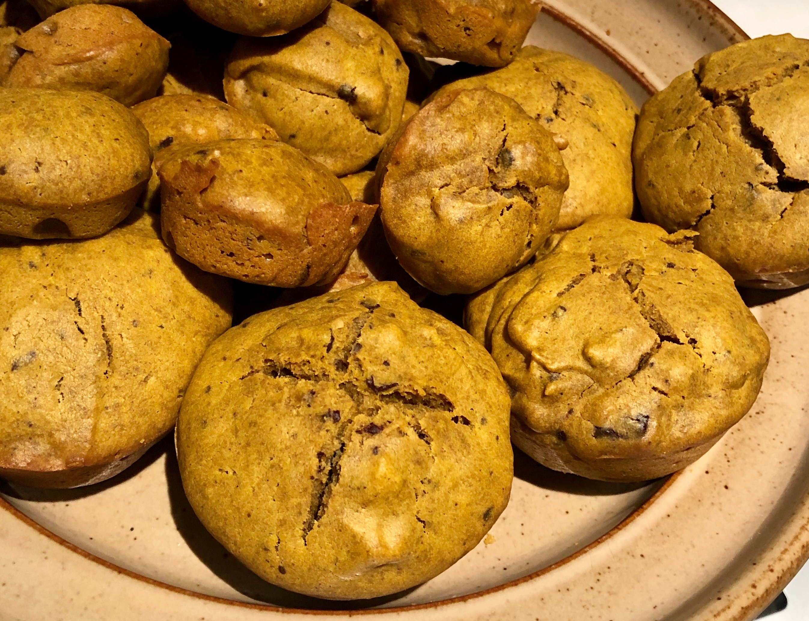
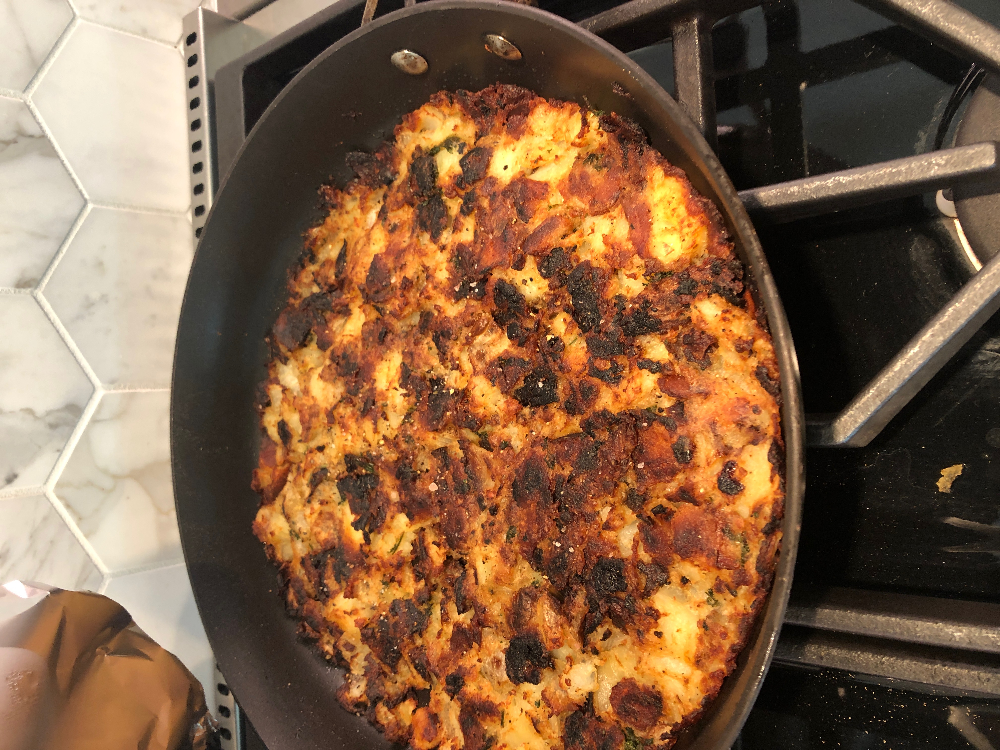
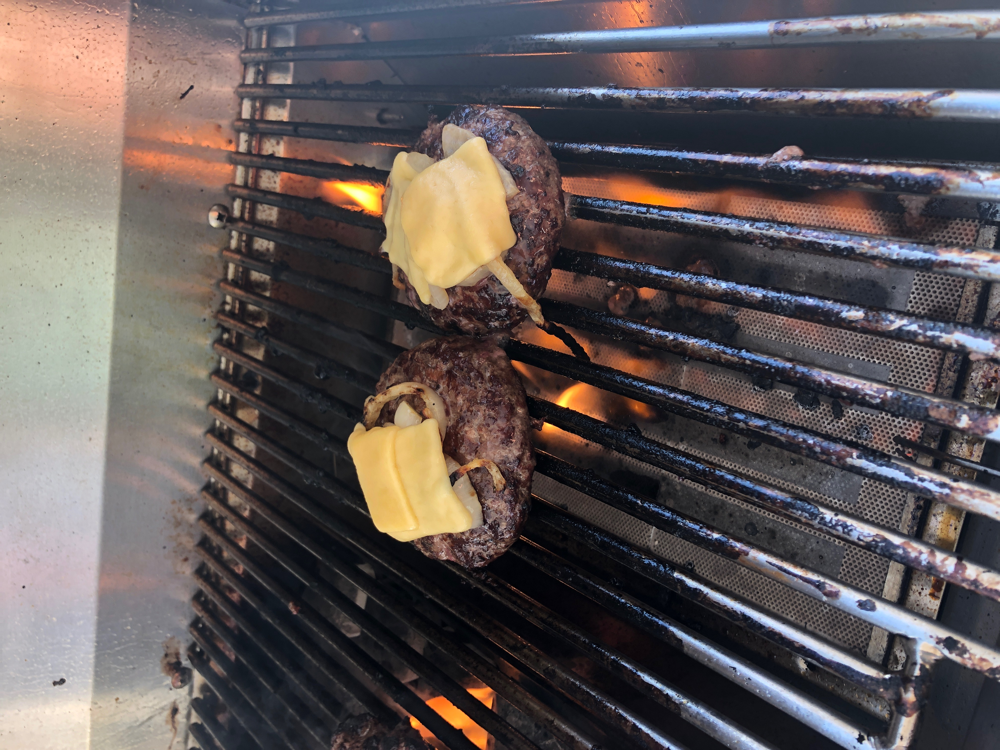

Top 3 Best Recipes
Pumpkin Muffins

1 3/4 cups all purpose flour
1 cup sugar
1/2 cup dark brown sugar
1 teaspoon baking soda
1/2 teaspoon salt
2 teaspoons cinnamon
1/4 teaspoon ground cloves
1/4 teaspoon nutmeg
2 eggs
1 15 ounce can pure pumpkin puree
1/2 cup coconut oil, melted
1 teaspoon vanilla extract.
Directions: Mix everything in bowl, Bake at 350 degrees for 25 min and check every 10 minutes after.
Latke

4 Potatos/ Chopped
3 Tablespoons of Butter
2 Tablespoons of Parsely
1/2 teaspoon pepper
2 Tablespoons of old bay
1 teaspoon ground garlic
1/2 Tablespoon Salt
1 cup of onions
Directions: Start cooking onions in pan with butter. After 5 Min, Add all other ingredients and move only after browing sides of potato zpieces.
Burger

2 Pounds of Ground Beef or Turkey
1/2 teaspoon salt
2 teaspoons cinnamon
Half cup of Garlic Powder
Half Cup of Onion Powder
Hald Cup of Onions
2 eggs
1/4 cup of Olive Oil
Slices of Cheese
2 Tablespoons of brown sugar
Directions: Mix all ingredients in a bowl (except cheese). Cook on Hot Grill for 6 min each side. Flip after 6 min. Then place Cheese and close grill for 3-5 min. Toast Buns on rack for 1 min and you are ready!